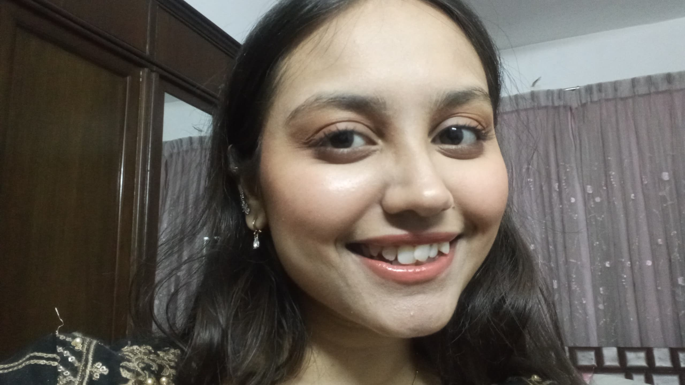

you, on repeat

this smile, still my favorite thing on this earth
and here's the proof it's not just a photo, it's really you
I've rewritten this about five times and none of the versions felt honest enough, so here's the plain one.
I was very mean to you yesterday. I picked a fight over something that didn't deserve our attention n, and I said things in a tone you didn't deserve to hear. You weren't the problem. I was just being stubborn and short-tempered, and I took it out on you instead of just talking like a normal person.
I keep looking at this video because they're from a day when I wasn't busy being difficult, and I miss being that version of myself with you. You have this way of making me blush with your antics and you laugh at my dumb jokes. Something that makes me feel like I'm the funniest person alive. I miss cracking dumb jokes and making you laugh.
I'm sorry. Not the quick kind of sorry I mumble to end an argument, but the kind where I actually mean it and I'm going to try harder to not do that again. You put up with a lot from me, and yesterday I made it harder than it needed to be.
Thank you for still being here while I figure out how to argue like a decent human being. I don't deserve you on my worst days, but I'm grateful you stick around anyway.
yours, always